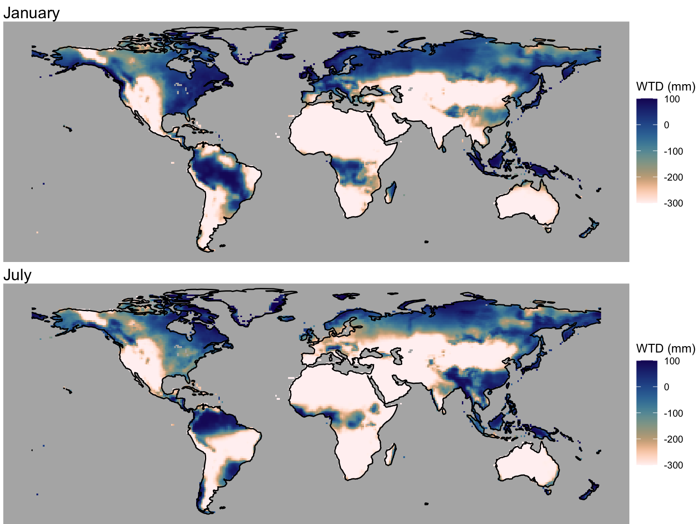
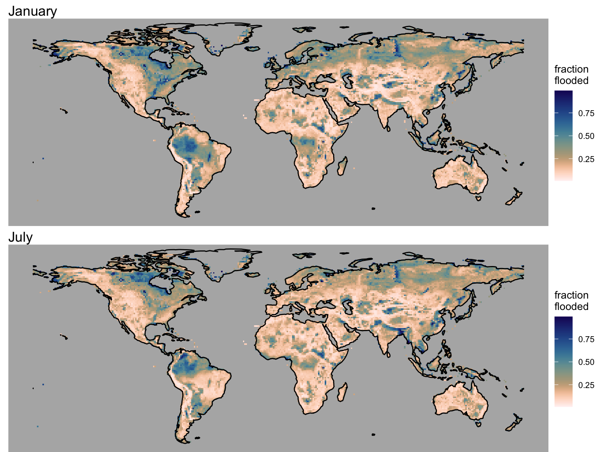

library(terra)
library(tidyterra)
library(ggplot2)
library(sf)
library(rnaturalearth)
library(rnaturalearthdata)
library(cowplot)
library(ggspatial)
library(dplyr)
library(tidyr)
library(here)
library(readr)
library(khroma)3 Global wetlands
The approach of resolving sub-grid scale topographic heterogeneity for modelling flooding across large scales - e.g., in global vegetation model simulations - was demonstrated in Chapter 2. In this chapter, we’re looking at global patterns of (simulated) water table depth and how it is “translated” to the global distribution of flooded area fractions and how this can be used to define the wetland area fraction.
3.1 Water table depth
We’re using outputs from the LPX-Bern simulations that were contributed to the GCP2021 Methane Budget. Simulations were forced by CRU monthly climate time series. The water table depth is simulated in LPX-Bern in a not-very-explicit manner to overcome the limitation implied by the free-drainage assumption. Figure 3.1 shows the simulated water table depth for months January and July.
# read water table depth outputs
# open raster
rasta_wtd <- rast(here("data/LPX-Bern_DYPTOP_vars_1990-2020_1x1deg_m_MONMEAN.nc"))
# extract data
df_wtd <- as.data.frame(rasta_wtd, xy = TRUE, na.rm = TRUE) |>
as_tibble()
# Rename columns for clarity
colnames(df_wtd) <- c("lon", "lat", paste0("month_", 1:12))
# Convert from wide to long format (tidy)
df_wtd <- df_wtd |>
pivot_longer(cols = starts_with("month_"), names_to = "month", values_to = "wtd") |>
mutate(month = as.integer(gsub("month_", "", month))) # Extract month numberCode
# load global coastline data
world <- ne_coastline(scale = "small", returnclass = "sf")
# January
wtd_jan <- ggplot() +
# Add elevation layer
geom_raster(
data = df_wtd |> filter(month == 1),
aes(x = lon, y = lat, fill = wtd),
show.legend = TRUE
) +
scale_fill_lapaz(reverse = TRUE, name = "WTD (mm)") + # Reverse the "lapaz" color scale
theme_void() +
theme(
legend.position = "right", # Position the legend at the bottom of the plot
legend.title = element_text(size = 10), # Adjust title font size
legend.text = element_text(size = 8), # Adjust legend text size
panel.background = element_rect(fill = "grey70", color = NA)
) +
coord_fixed() +
geom_sf(data = world, fill = NA, color = "black", size = 0.01) + # Continent outlines
ylim(-55, 80) +
labs(title = "January")
# July
wtd_jul <- ggplot() +
# Add elevation layer
geom_raster(
data = df_wtd |> filter(month == 7),
aes(x = lon, y = lat, fill = wtd)
) +
scale_fill_lapaz(reverse = TRUE, name = "WTD (mm)") + # Reverse the "lapaz" color scale
theme_void() +
theme(
legend.position = "right", # Position the legend at the bottom of the plot
legend.title = element_text(size = 10), # Adjust title font size
legend.text = element_text(size = 8), # Adjust legend text size
panel.background = element_rect(fill = "grey70", color = NA)
) +
coord_fixed() +
geom_sf(data = world, fill = NA, color = "black", size = 0.01) + # Continent outlines
ylim(-55, 80) +
labs(title = "July")
plot_grid(wtd_jan, wtd_jul, ncol = 1)
3.2 TOPMODEL parameters
To apply Equation 2.2 to each gridcell globally for calculating the flooded area fraction, the parameters \((k, v, q)\) need to be known for each of the coarse-scale model gridcells. As desribed in the previous Chapter, they are derived from the sub-grid scale topography. Note that, in contrast to \((k, v, q)\), the TOPMODEL parameter \(M\) is globally uniform, and was set to 8 by Stocker, Spahni, and Joos (2014). Note also that the global field of \((k, v, q)\) is temporally static, as it merely represents topography. Hence, once calculated, they can be re-used within any large-scale land surface or vegetation modelling framework. Let’s look at the global pattern of them.
# read all variables (topmodel parameters) from the file
rasta_pars <- rast(here("data/params_topmodel_M8_C12_filled_1x1deg.nc"))
var_names <- names(rasta_pars)
# Create an empty list to store data frames for each variable
tidy_data_list <- list()
# Loop through each variable and convert it to a tidy data frame
for (var in var_names) {
# Extract the variable as a raster
var_raster <- rasta_pars[[var]]
# Convert to a tidy data frame
var_df <- as.data.frame(var_raster, xy = TRUE) %>%
rename(lon = x, lat = y, value = var) %>%
mutate(variable = var) # Add a column for the variable name
# Append the data frame to the list
tidy_data_list[[var]] <- var_df
}
# Combine all data frames into one tidy data frame
df_pars <- bind_rows(tidy_data_list) |>
as_tibble()Code
gg1 <- ggplot() +
# Add elevation layer
geom_raster(
data = df_pars |> filter(variable == "K_PAR"),
aes(x = lon, y = lat, fill = value)
) +
scale_fill_batlowK(reverse = TRUE, name = "K") +
theme_void() +
coord_fixed() +
geom_sf(data = world, fill = NA, color = "black", size = 0.01) + # Continent outlines
ylim(-55, 80)
gg2 <- ggplot() +
# Add elevation layer
geom_raster(
data = df_pars |> filter(variable == "XM_PAR"),
aes(x = lon, y = lat, fill = value)
) +
scale_fill_batlowK(reverse = TRUE, name = "Q") + # ? (XM_PAR)
theme_void() +
coord_fixed() +
geom_sf(data = world, fill = NA, color = "black", size = 0.01) + # Continent outlines
ylim(-55, 80)
gg3 <- ggplot() +
# Add elevation layer
geom_raster(
data = df_pars |> filter(variable == "V_PAR"),
aes(x = lon, y = lat, fill = value)
) +
scale_fill_batlowK(reverse = TRUE, name = "V") +
theme_void() +
coord_fixed() +
geom_sf(data = world, fill = NA, color = "black", size = 0.01) + # Continent outlines
ylim(-55, 80)
gg4 <- ggplot() +
# Add elevation layer
geom_raster(
data = df_pars |> filter(variable == "MAXF"),
aes(x = lon, y = lat, fill = value)
) +
scale_fill_batlowK(reverse = TRUE, name = "K") +
theme_void() +
coord_fixed() +
geom_sf(data = world, fill = NA, color = "black", size = 0.01) + # Continent outlines
ylim(-55, 80)
plot_grid(gg1, gg2, gg3, gg4, ncol = 2)3.3 Flooded area fraction
The data loaded above contains the water table depth for each month of a mean seasonal cycle. In combination with the TOPMODEL parameters, we can now apply Equation 2.2 to calculate the flooded area fraction for each month of a mean seasonal cycle.
To calculate the flooded area fraction as a function of the monthly varying water table depth for each gridcell, we need to merge the data frames.
# merge data frames for water table depth and topmodel parameters
df_wtd_fflooded <- df_wtd |>
left_join(
df_pars |>
pivot_wider(
names_from = "variable",
values_from = "value"
),
by = join_by("lon", "lat")
)Now apply the assymetric sigmoid function, using the parameters and the water table depth as the argument.
assymmetric_sigmoid <- function(x, k_par, xm_par, v_par, maxf){
min(maxf, (1 + v_par * exp(-k_par * (x/1000 - xm_par)))^(-1/v_par))
}
df_wtd_fflooded <- df_wtd_fflooded |>
rowwise() |>
mutate(fflooded = assymmetric_sigmoid(wtd, K_PAR, XM_PAR, V_PAR, MAXF))
# save for use in next chapter
write_csv(df_wtd_fflooded, file = here("data/df_wtd_fflooded.csv"))Plot it for January and July again.
Code
# January
fflooded_jan <- ggplot() +
# Add elevation layer
geom_raster(
data = df_wtd_fflooded |> filter(month == 1),
aes(x = lon, y = lat, fill = fflooded),
show.legend = TRUE
) +
scale_fill_lapaz(reverse = TRUE, name = "fraction \nflooded") + # Reverse the "lapaz" color scale
theme_void() +
theme(
legend.position = "right", # Position the legend at the bottom of the plot
legend.title = element_text(size = 10), # Adjust title font size
legend.text = element_text(size = 8), # Adjust legend text size
panel.background = element_rect(fill = "grey70", color = NA)
) +
coord_fixed() +
geom_sf(data = world, fill = NA, color = "black", size = 0.01) + # Continent outlines
ylim(-55, 80) +
labs(title = "January")
# July
fflooded_jul <- ggplot() +
# Add elevation layer
geom_raster(
data = df_wtd_fflooded |> filter(month == 7),
aes(x = lon, y = lat, fill = fflooded)
) +
scale_fill_lapaz(reverse = TRUE, name = "fraction \nflooded") + # Reverse the "lapaz" color scale
theme_void() +
theme(
legend.position = "right", # Position the legend at the bottom of the plot
legend.title = element_text(size = 10), # Adjust title font size
legend.text = element_text(size = 8), # Adjust legend text size
panel.background = element_rect(fill = "grey70", color = NA)
) +
coord_fixed() +
geom_sf(data = world, fill = NA, color = "black", size = 0.01) + # Continent outlines
ylim(-55, 80) +
labs(title = "July")
plot_grid(fflooded_jan, fflooded_jul, ncol = 1)
3.4 Wetland area fraction
Define the wetland area fraction as the area that is flooded at least during three months of the year.
get_wetland_fraction <- function(df, min_months = 3){
df |>
arrange(desc(fflooded)) |>
slice(min_months) |>
pull(fflooded) |>
min()
}
df_wetland <- df_wtd_fflooded |>
select(lon, lat, month, fflooded) |>
group_by(lon, lat) |>
nest() |>
mutate(fwetland = purrr::map_dbl(data, ~get_wetland_fraction(.))) |>
select(-data)Code
ggplot() +
# Add elevation layer
geom_raster(
data = df_wetland,
aes(x = lon, y = lat, fill = fwetland)
) +
scale_fill_lapaz(reverse = TRUE, name = "fraction \nwetland") + # Reverse the "lapaz" color scale
theme_void() +
theme(
legend.position = "right", # Position the legend at the bottom of the plot
legend.title = element_text(size = 10), # Adjust title font size
legend.text = element_text(size = 8), # Adjust legend text size
panel.background = element_rect(fill = "grey70", color = NA)
) +
coord_fixed() +
geom_sf(data = world, fill = NA, color = "black", size = 0.01) + # Continent outlines
ylim(-55, 80)